IE9 OR ABOVE AND JAVASCRIPT CAPABILITY IS REQUIRED TO
SUCCESSFULLY RENDER THIS DOCUMENT
HTML5 IS PREFERABLE BUT NOT REQUIRED
This site best viewed with Netscape Navigator: 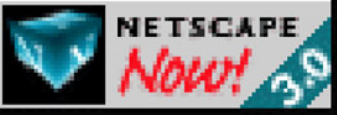
This project aims to create core elements of a physical-based path tracing renderer.
Author: l ### Walk through the ray generation and primitive
intersection parts of the rendering pipeline. Firstly we need to convert
the given coordinate \((x, y)\) from
image space to camera space. The sensor sample has to be on plane \(z = -1\), and from linear interpolation we
can get \(x' = (2x-1) \times
tan(\frac{hFov_{rad}}{2}), y' = (2y-1) \times
tan(\frac{vFov_{rad}}{2})\). This dir_cam vector is
then normalized, and converted from camera space to world space using
c2w. The generated ray starts at camera position (in world
space) and has direction c2w * dir_cam. Before returning
the result, min_t and max_t is set to
nClip and fClip respectively.
For all
primitive intersections, all intersections out of range
([min_t, max_t]) are ignored, and every valid intersection
will shrink upper bound max_t. Determining intersection
with spheres is based on equation \((o + td -
c)^2 = R^2\), and solving it with discriminant (\(a = r.d \cdot r.d, b = 2 \times (O_{ray} -
O_{sphere}) \cdot r.d, c = (O_{ray} - O_{sphere}) \cdot(O_{ray} -
O_{sphere}) - r^2\)). If \(b^2 - 4ac
< 0\), no intersection exists; otherwise intersection(s) can
be calculated with \(\frac{-b \pm \sqrt{b^2 -
4ac}}{2a}\), and intersection out of \([min_t, max_t]\) range is discarded. As for
triangles, Moller Trumbore Algorithm is used to get the barycentric
coordinates at the intersection, and derive the normal vector based on
\((1 - b1 - b2) * n1 + b1 * n2 + b2 *
n3\), filling in provided Intersection accordingly.
### Explain the triangle intersection algorithm you implemented in your
own words. With the barycentric coordinate \((b_0, b_1, b_2)\), we substitute sphere
boundary with triangle: \(O + tD = (1 - b_1 -
b_2)P_0 + b_1P_1 + b_2P_2\), thus giving \(\begin{bmatrix} -D & P_1 - P_0 & P_2 - P_1
\end{bmatrix} \begin{bmatrix} t \\ b_1 \\ b_2 \end{bmatrix} = O -
P_0\). Then we can solve for t, b1 and
b2. ### Show images with normal shading for a few small
.dae files.
|
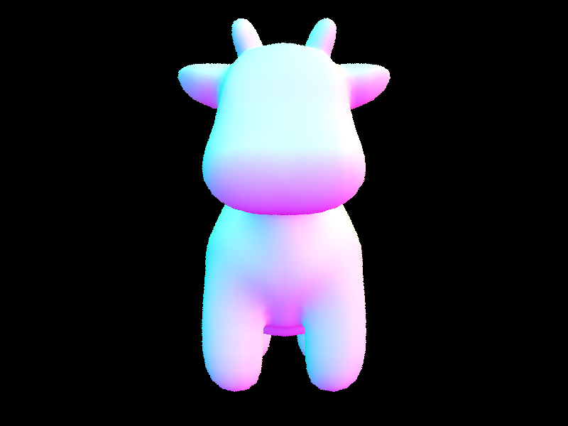 |
|---|
Author: x ### Walk through your BVH construction algorithm. 1. I get
the minimum and maximum location of centroids of primitives for each
axis. With them, I can determine which axis is the longest, and split
along that vertex. 2. If the total number of primitives is less than
max_leaf_size, I create a leaf BVH node, with
node.start as start and node.end
as end as provided in the skeleton code, finally add all
primitives to create a bounding box that bounds all of them. 3. If the
total number of primitives is more than max_leaf_size, I
split the elements by finding a “midway” iterator p using
the simple herustics below. Then I recursively call
construct_bvh twice, one that contains
start~p, one that contains p~end, to get left
and right BVH node. The resulting bounding box should be a bounding box
expanded with the bounding boxes of the 2 BVH nodes. I finally set them
as the l and r of the current BVN node and
return.
.dae files that
you can only render with BVH acceleration.

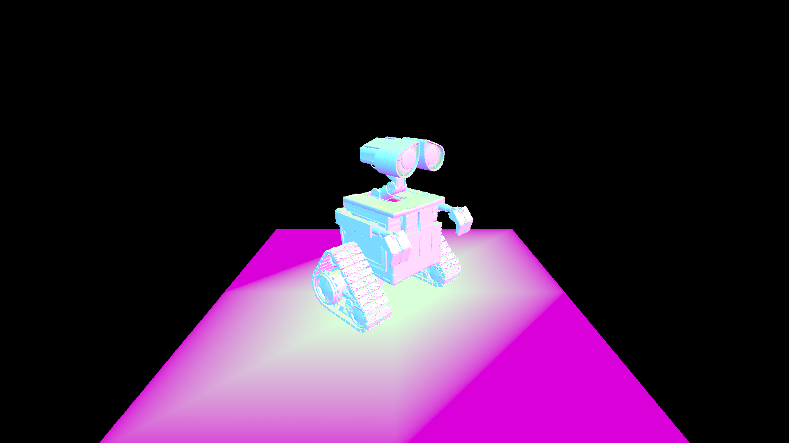
As described in (1) above I determined the longest axis. When a split
is needed I use std::sort to sort elements (with the
start and end iterator) by their location on
that axis. Then, I pick the pivot p such that it is at the
middle of the sorted elements; in other words, I split the element
evenly by half. While this does not result in fastest intersection test,
this may be way to build shallowest BVH tree as it has exactly and at
most \(\log(n)\) depth.
With BVH Tree and bounding box test, ray tracing speedup on hive is around 1000-3000x compared to old-school ray tracing. This is an extremely notable improvement.
All tests are run with argument -t 8 -r 800 600 on
hive6.eecs with i7-4770 @ 3.7GHz.
| dae File | With Part 2 | Without Part 2 |
|---|---|---|
cow |
0.0806 | 43.0998 |
banana |
0.0608 | 17.9874 |
maxplanck |
0.1054 | 382.9254 |
I used std::stack while implementing intersection test
without thinking this is an possible extra credit oppourtunity, after
deoptimising it and optimising construction, intersection time is
tested:
Everything is run on Ryzen 3800x @ 3.9HGz with
-t 16 -r 800 600, windowed mode.
| File | Construction/Recursion | Intersection/Recursion | Construction/Iteration | Intersection/Iteration |
|---|---|---|---|---|
| maxplanck | 0.1020 | 25.3410 | 0.1702 | 0.0997 |
| peter | 0.0719 | 17.1900 | 0.1240 | 0.1011 |
| CBlucy | 0.3024 | 8.5079 | 0.5409 | 0.0913 |
See proof here.
Using while loop and std::stack can drastically increase
runtime as 1. there’s less OS overhead and 2. we can retain
t0 and t1 much more easily and use that t0 and
t1 when testing intersection for children node. The recursive approach
is headless (no t0 and t1 in argument) so it’s hard to do it.
But construction becomes slower. I think the thing is
std::stack itself might be slower in this situation, also
the bounding box construction logic makes it much easier to write in a
recursive way (need child bounding box when constructing parent), I
wrote lots of extra logic to account for this issue.
See branch recursive-bvh for the recursive version of BVH
intersect.
Author: l ### Walk through both implementations of the direct
lighting function. Hemisphere sampling: After creating the coordinate
system based on normal vector of the hit point, generate a random
incoming light direction wj with
hemisphereSampler->get_sample(), and create a ray
starting from hit_p with direction o2w * wj
(both vectors are in world coordinates), min_t setup as
EPS_D. If this ray intersects with objects in scene,
2 * PI * isect.bsdf->f(w_out, wj) * new_isect.bsdf->get_emission() * dot(wj, isect.n)
is accumulated. Finally, function returns average lighting as result.
Importance sampling: For every light source in the scene, first
check to determine how many num_samples we should use
(delta light only needs one, otherwise use ns_area_light),
and generate a sample with light->sample_L. We ignore
incoming light with wj_object.z < 0 (behind the incident
surface), and create a new ray as usual. Note that min_t
and max_t need to be set to EPS_F and
distToLight - EPS_F respectively to workaround floating
precision issue. Finally, accumulate the average contribution of each
light source to result. ### Show some images rendered with both
implementations of the direct lighting function.
| Hemisphere | Importance |
|---|---|
| 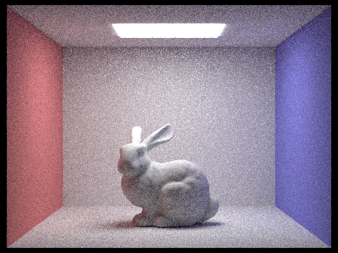 |  |
 |
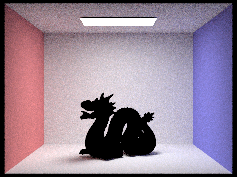 |
-l flag) and with 1 sample per pixel (the
-s flag) using light sampling, not uniform hemisphere
sampling.| 1 ray | 4 rays | 16 rays | 64 rays |
|---|---|---|---|
 |
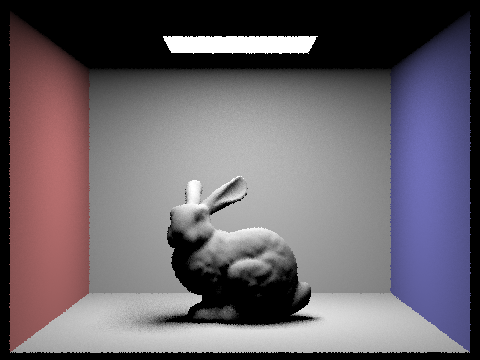 |
Author: x ### Walk through your implementation of the indirect
lighting function. In
PathTracer::at_least_one_bounce_radiance(): 1. Define a
probability, \(p\), for our Russian
Roulette revolver. 2. First, get the one-bounce radiance of the
intersection point, and add it to the total radiance, \(L_{\text{out}}\). 3. Then, get the bsdf,
pdf and the \(\omega_{\text{in}}\) with
sample_f. 4. If the depth of the ray (initialised as \(0\)) exceeds max_ray_depth,
return \(L_{\text{out}}\). 5. Discharge
our revolver for the Russian Roulette: with probability \(p\) we continue, with probably \(1-p\) we stop and return \(L_{\text{out}}\). However, we get a “free
round”: if the depth of ray is 0, we always continue. 6. If we are lucky
to continue, construct a ray starting at the intersection point shooting
towards \(\omega_{\text{in}}\), with
depth increased and min_t set as \(\epsilon\). 7. If the ray hit something,
then we recursively call at_least_one_bounce_radiance with
the newly-generated ray and the new intersection point, and get the
returned radiance \(L\). 8. Calculate
the unbiased estimator \(X_{\text{rr}}=\frac{Lf(w_i\rightarrow
w_o)\cos{\theta}}{p_{\text{rr}}p_{w_{\text{in}}}}\), where \(f(w_i\rightarrow w_o)\) is the bsdf we get
and \(p_{w_{\text{in}}}\) is the pdf we
get, and add it to \(L_{\text{out}}\).
9. Return \(L_{\text{out}}\).
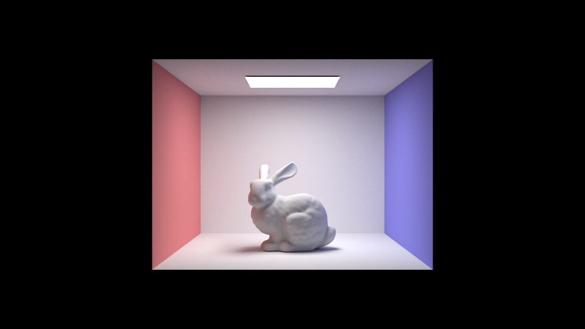

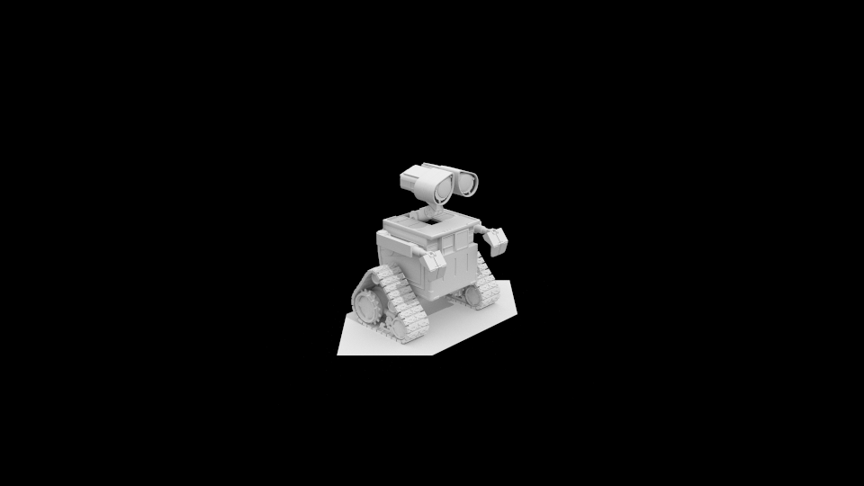
We edited PathTracer::at_least_one_bounce_radiance such
that the initial value of L_out is
r.depth == 0 ? Vector3D() : one_bounce_radiance(r, isect)
or
r.depth != 0 ? Vector3D() : one_bounce_radiance(r, isect).
We also need to disable zero-bounce lighting.
Argument:
./pathtracer -t 15 -r 960 540 -l 16 -m 5 -s 1024 -f CBbunny_t8_s1024_l16_m5_960_540.png ../dae/sky/CBbunny.dae
1967.3885s on hive6.eecs with i7-4770 @ 3.7GHz.
| Direct | Indirect |
|---|---|
 |
 |
max_ray_depth |
Pic | Argument |
|---|---|---|
| 0 | 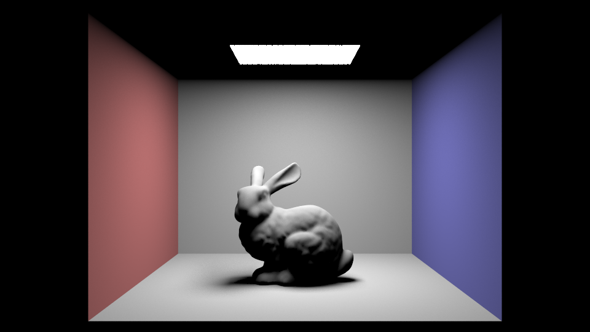 | ./pathtracer -t 8 -s 1024 -l 16 -m 0 -r 960 540 -f ./out-part4-2/CBbunny_t8_s1024_l16_m0_960_540.png ../dae/sky/CBbunny.dae |
| 1 | 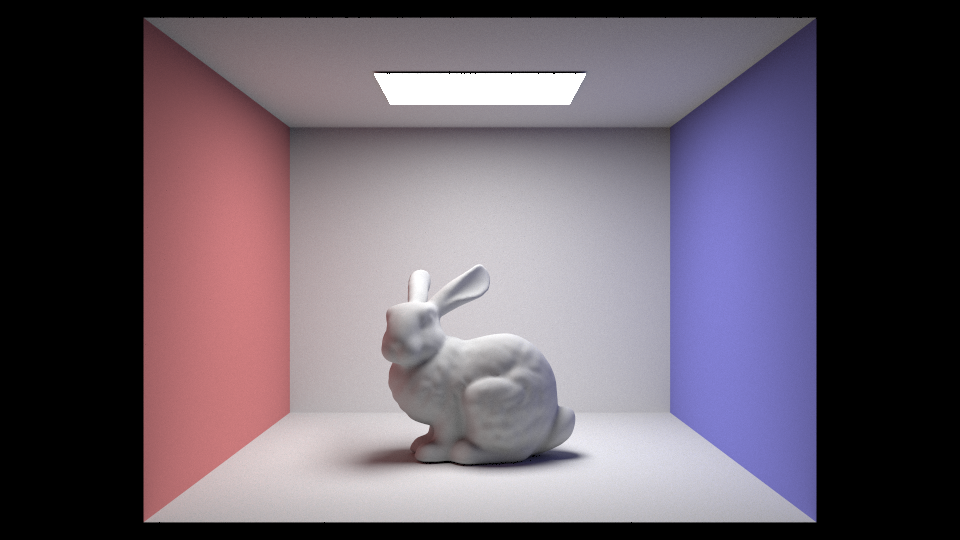 | ./pathtracer -t 8 -s 1024 -l 16 -m 1 -r 960 540 -f ./out-part4-2/CBbunny_t8_s1024_l16_m0_960_540.png ../dae/sky/CBbunny.dae |
| 2 |  |
./pathtracer -t 8 -s 1024 -l 16 -m 2 -r 960 540 -f ./out-part4-2/CBbunny_t8_s1024_l16_m0_960_540.png ../dae/sky/CBbunny.dae |
| 3 |  |
./pathtracer -t 8 -s 1024 -l 16 -m 3 -r 960 540 -f ./out-part4-2/CBbunny_t8_s1024_l16_m0_960_540.png ../dae/sky/CBbunny.dae |
| 100 |  |
./pathtracer -t 8 -s 1024 -l 16 -m 100 -r 960 540 -f ./out-part4-2/CBbunny_t8_s1024_l16_m0_960_540.png ../dae/sky/CBbunny.dae |
We used this simple script to overload hive for one whole night:
./pathtracer -t 8 -s 1 -l 4 -m 5 -r 960 540 -f ./out-part4-1/CBspheres_t8_s1_l4_m5_960_540.png ../dae/sky/CBspheres_lambertian.dae &
./pathtracer -t 8 -s 2 -l 4 -m 5 -r 960 540 -f ./out-part4-1/CBspheres_t8_s2_l4_m5_960_540.png ../dae/sky/CBspheres_lambertian.dae &
./pathtracer -t 8 -s 4 -l 4 -m 5 -r 960 540 -f ./out-part4-1/CBspheres_t8_s4_l4_m5_960_540.png ../dae/sky/CBspheres_lambertian.dae &
./pathtracer -t 8 -s 8 -l 4 -m 5 -r 960 540 -f ./out-part4-1/CBspheres_t8_s8_l4_m5_960_540.png ../dae/sky/CBspheres_lambertian.dae &
./pathtracer -t 8 -s 16 -l 4 -m 5 -r 960 540 -f ./out-part4-1/CBspheres_t8_s16_l4_m5_960_540.png ../dae/sky/CBspheres_lambertian.dae &
./pathtracer -t 8 -s 64 -l 4 -m 5 -r 960 540 -f ./out-part4-1/CBspheres_t8_s64_l4_m5_960_540.png ../dae/sky/CBspheres_lambertian.dae &
./pathtracer -t 8 -s 1024 -l 4 -m 5 -r 960 540 -f ./out-part4-1/CBspheres_t8_s1024_l4_m5_960_540.png ../dae/sky/CBspheres_lambertian.dae &sample_per_pixel |
Pic |
|---|---|
| 1 | 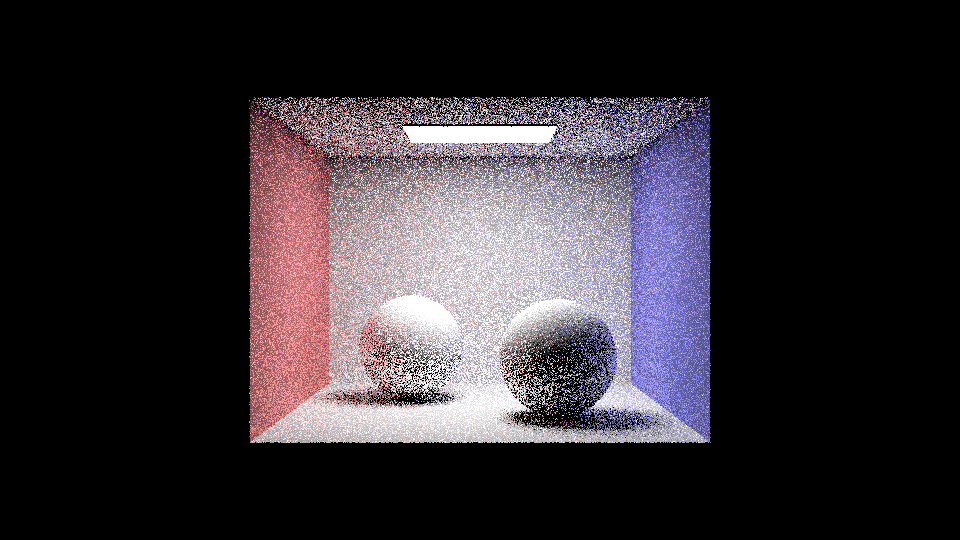 |
| 2 | 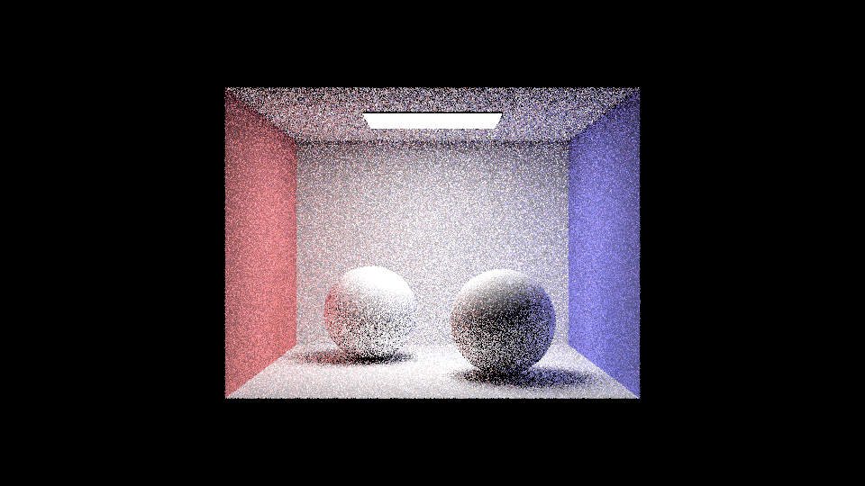 |
| 4 |  |
| 8 |  |
| 16 | 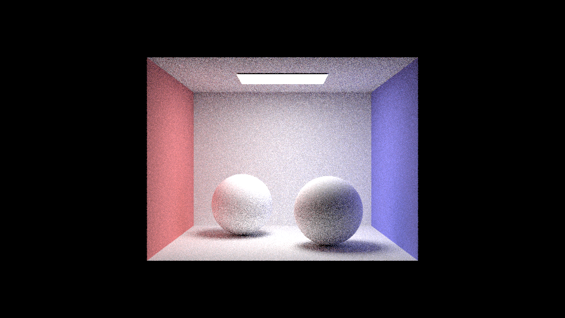 |
| 64 |  |
| 1024 |
Author: l
In the PathTracer::raytrace_pixel loop, use
s1 and s2 to trace the accumulative sum of
illuminance and illuminance^2 at present. Before every
samplesPerBatch execution of loop body, check if currently
\(1.96 \times \frac{\sigma}{\sqrt{n}} <=
maxTolerance \times mean\). If this condition is satisfied, stop
sampling and store current average, sampling count to sample buffer,
sample count buffer. ### Pick one scene and render it with at least 2048
samples per pixel. Show a good sampling rate image with clearly visible
differences in sampling rate over various regions and pixels. Include
both your sample rate image, which shows your how your adaptive sampling
changes depending on which part of the image you are rendering, and your
noise-free rendered result. Use 1 sample per light and at least 5 for
max ray depth.
CLI:
./pathtracer -t 8 -s 2048 -l 1 -m 6 -a 256 0.05 -r 1920 1080 -f niubi1.png ../dae/keenan/building.dae
| Result | Sample Distribution |
|---|---|
 |
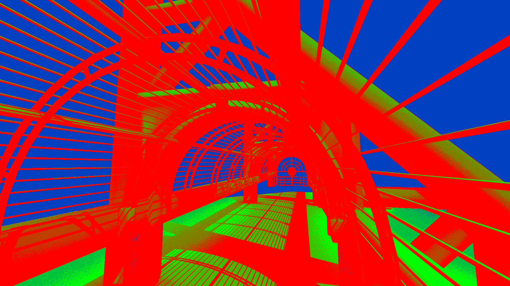 |
hive must be very tired for this picture……
author: x
We investigated how pathtracer parse camera in
dae file. It appears that for some cameras (that has
certain transformation, like in building.dae - the camera,
as in blender, is inside the tunnel, but when opening in
pathtracer it’s above) it cannot be parsed correctly -
potentially because of some transformations it made in
collada.cpp:175-199. We investigated how
pathtracer parse XML, specifically in
collada.cpp:255-268 (how does it apply transformation to
camera) and collada.cpp:358-397 (how it parsess camera),
and how camera is used in the actual rendering, specifically
application.cpp:246-251 and
application.cpp:284-296.
We need to solve this because we need to run rendering for
building.dae on hive in order to save our electricity, but
hive*’s nVidia driver has certain bugs that prevents OpenGL
from running on a forwarded headless X server, so we must be able to
transform the camera without the GUI.
Sadly we cannot fix the issue in one day, so we decided to use an
violent approach (in branch violent): we dump out the
camera setting and forcibly write it in. Then we discovered the
-c flag so this is useless.
We encountered the same issue when rendering 1920*1080:
we need to scale about 2.5x in order to get a real high resolution
image. Thus, we added a flag -k such that it moves the
camera up with argument 2.5f. This makes our life easier
before discovering -c flag, and we don’t need to deal with
camera settings at all even if we knew it.